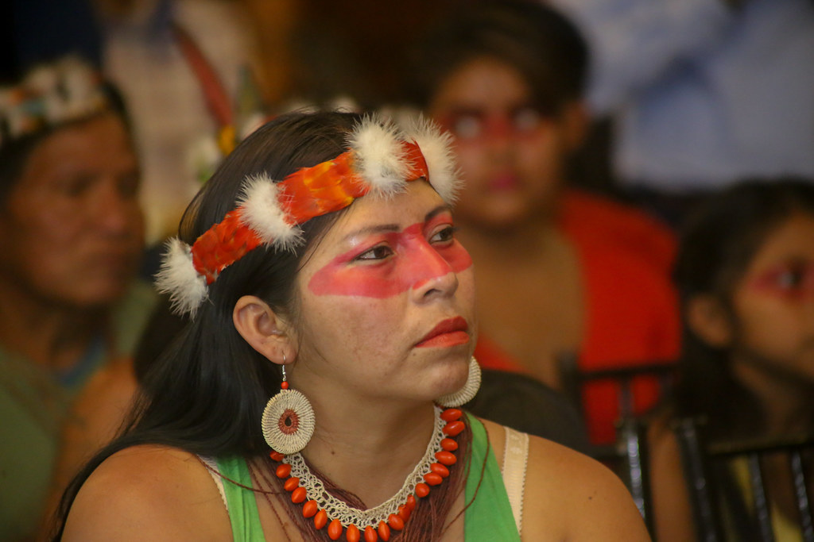

Who are they?
 In 1999, a presidential decree created the Tagaeri Taromenane “Intangible” or Untouchable Zone (ZITT)
within Yasuní National Park. This meant that the area in question would be permanently off-limits for any extractive operations,
including oil drilling. According to the decree, intangible zones are “protected areas of great cultural and biological importance
in which no type of extractive activity can be carried out due to the high value they have for the Amazon region, Ecuador, the world,
and present and future generations.”
The term “taromenani” means “people of the road” and it is used to refer to a series of clans that are close to each other to a greater
or lesser extent, and to the rest of the Waorani. They are most probably descendants of those families who decided to move to other territories
before contact was made. This is the case of the Wiñatairi, which are still remembered by some Waorani families. Additionally, another Taromenani
clan is known as Waneiri, but there is little information as to their existence. These distant clans, however, are considered by the Waorani to
be “culturally related”.